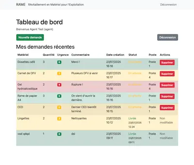

Case Study: Developing a Business Application
Optimizing Communication and Traceability Through Technology.

← Back to Case Studies
The Context
The supply request process at SNCF relied on informal channels (word-of-mouth, SMS, email), leading to information loss, duplicate requests, and a lack of centralized tracking for managers.
My Role
In my personal time, I acted as both Product Owner and Developer to design and create a pragmatic solution to this concrete problem.
My Approach
- Needs Analysis: I identified the "pain points" of both agents and managers to define the essential features: a single request form, a tracking dashboard, and clear statuses.
- Full-Stack Development: I developed the application in Python, creating a backend to handle logic and data, and a simple web interface for user interaction.
- Key Features: User account management (agent/manager), form for creating/editing/deleting requests, and a dashboard with visual statuses (requested, in delivery, delivered).
Results
- A **functional prototype** developed and proposed internally.
- Demonstration of **potential impact**: time savings for managers and increased visibility for agents.
- Practical application of my skills in Python, needs analysis, and rapid development.